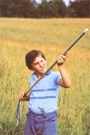
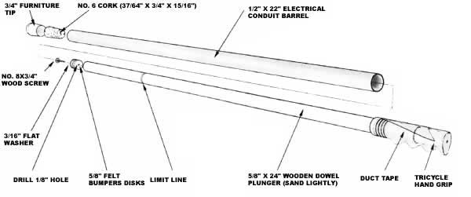

This traditional homestead toy can be just as much fun today as it was many years ago.
A generation or so ago, plug poppers similar to the one you see here were big hits with the little folks come harvesttime. When the crops were in, you see, culled and spoiled potatoes (or cucumbers, apples, or any other "meaty" fruits or vegetables) were fair game ... as the youngsters "ran them through" with the tips of their weapons, then propelled the pithy projectile plugs with a sharp stroke of the pump handle.
Many of those original spud guns were carved from wood ... but you can make a modern version of the classic potato pistol, using a 22" length of 1/2" electrical conduit (this tube should have an inside diameter of 5/8"), a 5/8" dowel that's 24" long (you'll probably have to sand it down slightly), a tricycle handgrip, a No. 8 X 3/4" wood screw with a matching 3/16" flat washer, several 5/8"-diameter felt bumper disks, and some electrical or duct tape. Furthermore, since the thought of volleys of raw vegetables flying through the house may not appeal to some parents, we've also called for alternate ammunition, in the form of a No. 6 cork stopper capped with a 3/4"-diameter plastic furniture tip (and we'll explain how to keep even that featherweight slug from causing any harm).
The popgun works through air pressure ... and, to contain that force, you'll need to make a seal for the dowel piston by fastening up to half a dozen predrilled felt disks to one end of the rod with a washered wood screw. At the plunger's opposite end, a few wraps of tape will allow you to snugly fit a tricycle grip (decorated with streamers if you choose) in place to serve as a handle.
Slipping the completed plunger into the conduit barrel might prove to be a bit tricky unless you first loosen the screw holding the felt seals in place. Then, once the union is made, you can tighten the fastener from the open end of the tube, thus compressing and widening the disks. In addition, to make sure that the plunger isn't mistakenly drawn from its barrel, it's best to mark a limit line on the dowel at a point about 6 inches behind its forward end. And a bit of oil (or even water) poured into the popper's "barrel" end will cause the felt to swell, effecting an even better seal. Once that's done, the toy will be ready for action.
If you put your spud gun together according to our specifications, about 3/4" of conduit should protrude beyond the plunger's felted end. This casing can be shoved into a spoiled potato (or what have you) to compress a wad of material at the business end of the barrel ... or the tipped cork can be pressed into the opening instead. To discharge the projectile, simply pull back on the plunger (but no farther than the marked line) and then ram it forward so the handgrip stops at the rear of the barrel. The missile will fly from the spud shooter's muzzle with a loud pop.
Of course, common sense dictates that your children be warned not to shoot their popguns at people or animals ... but, to play it safe, you might want to modify !he toy by tying a length of string to the plunger's wood screw, then stapling the free end to the back of the cork. The altered popper will still make an impressive noise, but it'll have far more bark than bite.
|
 |
|
 |